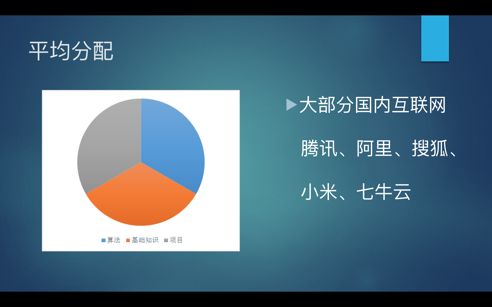

1.时间安排：
现在开始（12月，1月，2月）写简历和刷算法题；
2月底开始内推；
3-6月实习；
6-10月暑期实习；
7月底开始校招；
10月之后补招春招。
明确找工作目标，内推时间很短，早做准备，实习不忘找内推
实习：错过了大批的内推和正式招聘，还有散招
校招：错过了大批的招聘，还有补招和春招
2.简历：
现在开始写简历，准备两种简历：网申 + 内推 ，简历不是一次完成的，要不断总结和完善
简历正装照片
个人博客
github
领英，中英简历
简历内容：
基本信息（姓名 邮箱 电话 应聘岗位）、教育背景、专业技能、实习经历 & 项目经历、获奖荣誉 & 专业认证
3.项目：
来源于实习，网上开源项目；面试官不了解你的项目，所以要讲好一个故事，讲清楚自己的贡献；不知道的内容切忌乱蒙
师兄介绍他的实习经历里有两个是利用美团，搜狗的开源数据等，自己研究一下，然后写进实习经历里。
项目介绍：
主要工作：个人贡献、涉及技术（可选）、证明人、电话（网申）
4.算法：

算法题：
现在就开始准备，在LeetCode上提交，注意逛leetcode discuss，easy medium完全弄懂，在LintCode上修改codeing style，在九章算法上找最优解，还有牛客网，一亩三分地，待字闺中，glassdoor，cc150树上的看懂。hihocoder.com:偏测评和比赛，题目较难，微软笔试指定平台；poj.com:题海3000道；
参考书：
剑指offer，程序员面试宝典，程序员面试金典，编程之美
注意项：
codeing style（lintcode），bug free（注意看师兄博客，写博客记录算法题，第一天直接写，出错误了，把所有错误记下来，然后第二天接着写，一直loop，知道bug free才return）, AC!=Best Answer(九章算法答案，leetcode discuss),练习手写代码、白板写代码能力，按类别刷题，多做总结，尝试多种解法，注意时间 & 空间复杂度。
5.基础知识
讲原理、说问题、出方案
看书、看面经、关注技术网站
“专业技能” & 职位招聘要求
原理问题必须吃透，某一点深入了解会大大加分
6.前端
项目：
360前端星计划，百度ife，论坛上找外包，自己做客户端,我当时做的项目是自己在外面找的一个外包，做了一个旅游网站；你如果实验室有相关的项目可以跟着做就行，如果没有，也可以自己做，你可以看一下《百度前端技术学院》（百度搜一下），然后看看往年的任务，上面从易到难有4个阶段的任务，跟着做下来会有很大的提高。
基础知识：
HTML
熟悉常用标签以及其属性（W3C上过一遍就行）
主要是看一下HTML5中新增加的一些东西（看《javaScript高级程序设计》）
canvas、localStorage/sessionStorage、web socket等CSS
熟悉基础的页面布局：盒模型／css权重／两栏布局／三栏布局／水平垂直居中
多端适配的布局：响应式布局、自适应的单位（％、vw、vh、rem）
关于布局相关的，可以通过自己写一些静态的页面来熟悉（比如写一个微博首页之类）。
CSS3中的新特性：这个可以看W3C上面
CSS预处理器（Sass、Less）：这两种预处理器是类似的，学一种就行。
性能较高的CSS的写法
CSS相关的书：《CSS禅意花园》javaScript
js的基础很重要，推荐几本书：
《javaScript高级程序设计》：这本书至少看2遍吧，非常经典，很多面试题在这本书上都可以找到答案
《js秘密花园》：这本书在网上可以找到
《编写高质量的javaScript》：好像是叫这个名字，我是在图书馆借的学习ES6：
《深入浅出ES6》系列
《ECMAScript6入门》：阮一峰写的书，在网上就可以看到（现在一般都用ES6来写了）。Http协议
了解http的基本组成、常见的http头的作用
推荐的书：《http权威指南》浏览器相关
了解浏览器如何渲染页面
如何优化网站性能
网站安全问题（XSS、CSRF）
热门的框架
至少要熟悉一门前端框架，今年比较热门的前端框架有2个：Vue.js和react
推荐书籍：博客（张鑫旭、阮一峰）、《深入react技术栈》、《深入浅出react》系列
我现在用的比较多的是react。入门的话，推荐看官网和一些人的博客（阮一峰）、，然后自己尝试做一下慢慢就会了。工程方面
前端自动化构建工具
现在用得比较多的是：webpack、gulp代码版本管理 git
前端培训课程
《百度前端技术学院》
今年是3月12号开始报名的，现在也可以看到之前的任务
《360前端星计划》
关注360实习招聘就行app
前端工程师
开发者头条
面试相关：
关于实习，要去大一点的公司实习（坚持不懈地找），无论能不能转正，都要做两手准备（有的校招面试8月初就开始了）
有自己的技术博客（非常加分），注意平时的积累，基于github搭建一个博客（最好自己买一个域名），面试官会按照博客或github上的项目问
注意面试题的积累，每次面完把题目纪录下来，然后弄懂，积累的面试题多了之后，就把面试题按知识点进行分类，然后系统地弄懂
前端的笔试分两种类型：一种是单独为前端出的一份试卷，一种是研发大类；刷到easy程度对前端面试来说肯定是没问题的，但是可能对研发大类的笔试会有点问题，不过建议先看前端基础，框架，学有余力再去刷题
尽量走内推，笔试太难过了，尤其是对于前端而言，所以前期的内推机会一定要把握好
关于刷题
前端岗算法好虽然不是必备项，但会是一个加分项，所以学有余力的话，最好还是去刷一下题（简单的）。
可以边学前端边刷题，但是还是前端的基础比较重要
做前端不太好进国企
师姐经验：学完ife第三阶段，把红宝书看两遍就找实习，在今日头条从11月实习到现在，拿到了转正sp，28-30万。
7.面试笔记：
总结面试遇到的题目
算法+项目+基础知识
8.国企+户口
军工：10月
航天科技，航天工业，航天科工 户口很稳
银行：10月中
中，工，中信，农，北京，商
软开，数据中心
证券，保险：11月
人保财险很好，户口+7万年终+2500公积金
电信 > 移动 > 联通
中科院，解决户口（计算机，自动化，信工），软件，有员工房
提前写毕业论文，不然时间冲突。
想清楚自己想要留北京吗？要户口吗？